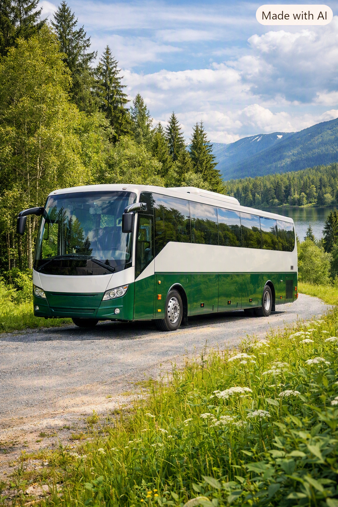

En buss är ett fordon som kan användas för att transportera minst 8 personer från en plats till en annan. Det som skiljer bussar från annan kollektivtrafik så som tunnelbana eller spårvagn är att den inte behöver förändra infrastrukturen på så sätt att bygga nya tunnlar eller järnvägar.
En buss åker redan på vägarna och kan ta sig dit alla vägar finns. Vilket gör bussar till ett väldigt flexiblelt transportsätt i både städer och landsbyggder. De erbjuder även flexibilitet i rutter och kan anpassas efter efterfrågan. Bussar kan vara både elektriska och dieseldrivna, vilket påverkar deras miljöpåverkan.
Elektriska bussar har en betydligt lägre miljöpåverkan jämfört med dieseldrivna bussar. De minskar utsläppen av växthusgaser och bidrar till bättre luftkvalitet i städer. Dock kräver produktionen av batterier och elnätets energikällor noggrann planering för att minimera negativ påverkan på miljön.
Att resa med buss är ett hållbart alternativ, särskilt när det gäller elektriska bussar. Genom att investera i renare teknik och optimera rutter kan vi minska vår klimatpåverkan och bidra till en mer hållbar framtid.